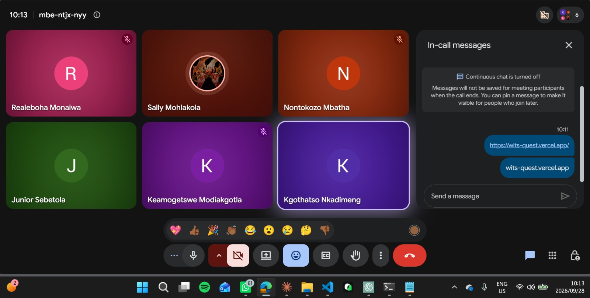
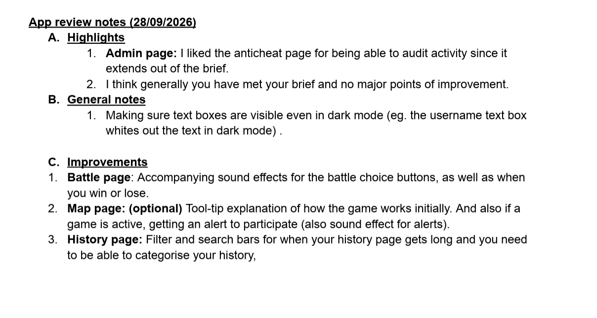
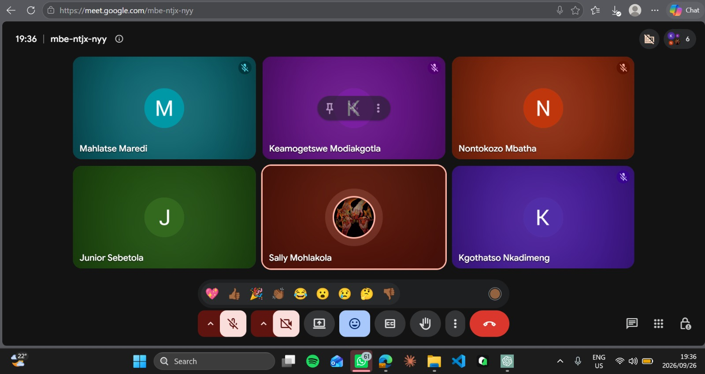

Stakeholder Reviews¶
Formal feedback sessions with the course tutor — the project's primary stakeholder reviewer. These records are kept separate from internal team meetings (per the tutor's own instruction) and every future session is recorded the same way: minutes plus a photo with the stakeholder, dated.
Stakeholder Check-in & App Review — 2026-09-28¶
Type: Follow-up meeting with the stakeholder (Google Meet), followed by a written app review Attendees: Team Big-O and the stakeholder (online, 6 participants)
What was discussed¶
- The team asked the stakeholder for a PDF review of the app.
- The live app link (wits-quest.vercel.app) was shared in the call chat.
Action items¶
| Owner | Task | Due |
|---|---|---|
| Stakeholder | Provide a PDF review of the app | ✅ Received 2026-09-28 (see below) |
| Team | Triage the review's improvements into the sprint plan | TBD |

Feedback received — App review notes (28/09/2026)¶
Application reviewed: wits-quest.vercel.app
Highlights¶
Admin page. Liked the anti-cheat page for being able to audit activity, since it extends beyond the brief.
Overall. Generally the team has met the brief, with no major points of improvement.
General notes¶
Dark mode. Make sure text boxes are visible even in dark mode (e.g. the username text box whites out the text in dark mode).
Improvements¶
Battle page. Accompanying sound effects for the battle choice buttons, as well as when you win or lose.
Map page (optional). Tool-tip explanation of how the game works initially. Also, if a game is active, getting an alert to participate (also a sound effect for alerts).
History page. Filter and search bars for when your history page gets long and you need to be able to categorise your history.
How the team responded¶
| Feedback | Type | Response / where it goes |
|---|---|---|
| Anti-cheat admin page praised; brief met | Highlight | No action needed — recorded as positive validation of the admin audit feature |
| Text boxes unreadable in dark mode (username field) | Bug / accessibility | Pending triage |
| Sound effects on battle choice buttons, win and lose | Improvement | Pending triage |
| Map tooltip explaining the game (optional) and active-game alert with sound | Improvement (optional) | Pending triage |
| Filter and search bars on the history page | Improvement | Pending triage |

Supervisor Meeting — 2026-09-26¶
Type: Supervisor check-in (Google Meet) Attendees: Team Big-O and the supervisor (online, 6 participants)
Summary¶
| Topic | Outcome |
|---|---|
| App review | The team asked the supervisor to review the application and give feedback |
| Next meeting | Rescheduled to Monday (to be confirmed) |
| Advice received | Keep working on the identified issues and address them as development progresses |
Action items¶
| Owner | Task | Due |
|---|---|---|
| Team | Continue fixing the identified issues during development | Ongoing |
| Team | Confirm the Monday meeting | TBD |

Live Demo & New Feedback — 2026-09-15¶
Type: Live app demo to stakeholders with new feature feedback — the second session on review day, straight after the Sprint 2 review. Attendees: Team Big-O and stakeholders (in person, on campus)
What was demonstrated¶
- Mobile — the game running on phones.
- New Sprint 2 features — including offline play (the game can now be played without a connection).
- The live deployed app — the production build at wits-quest.vercel.app.
- Division system — players are divided by divisions, and you can't challenge someone in a division lower than yours.
- Challenging players two ways — through the leaderboard, or directly through the map.
New feedback received¶
Friend system. Add a friend system — if you want to play a specific person, you currently have to scroll through everyone. Instead, players should be able to add friends and choose who to play.
Map clutter. On the map, show the player's avatar instead of their whole name — full names make the map look crowded.
How the team responded¶
| Feedback | Response / where it goes |
|---|---|
| Friend system for direct challenges | Logged as a Sprint 3 backlog feature — friends list with a direct "challenge a friend" flow |
| Avatars instead of full names on the map | Sprint 3 polish task — show avatars on map markers to reduce clutter |

Sprint 2 Review — 2026-09-15¶
Type: Tutor check-in — verification of Sprint 1 feedback and Sprint 2 progress review Timing: Scheduled after the university recess — with lectures paused, the team used the recess window to work on the implementation and tutor met us in person on campus and close out Sprint 2. Attendees: Team Big-O and the course tutor (in person)
What was verified¶
The tutor reviewed each item from her Sprint 1 feedback against the current project and verified that the changes she requested at the first review have been implemented:
| Sprint 1 request | Verified state |
|---|---|
| Code-quality checks (linters, Prettier) | ESLint + Prettier enforced by husky pre-commit hooks and CI |
| Three-repo separation (no monorepo) | Frontend, backend, and documentation live in separate repositories, kept in sync |
| README slimmed to basics | READMEs now only cover what the app is and how to run it; the detail moved to this site |
| Why Issues, not Projects | Recorded in Decision D-01 |
| Git methodology standard | Branch-naming structure and Conventional Commits documented in Git Workflow |
| Project methodology / roadmap | Methodology and Sprints pages |
| Security — OAuth, no password hashing | Auth migrated to Supabase Auth; the custom JWT + bcrypt code was removed |
| Tech-stack rationale | Team-specific reasoning documented in Technical Decisions |
| Meeting structure + stakeholder minutes | Fixed meeting record format in use; stakeholder sessions recorded on this page, separate from team meetings |
Notes¶
- The session was deliberately scheduled now, during recess, since the break gave the team and the tutor a window to meet on campus between sprints.
- The tutor confirmed the Sprint 1 feedback items are implemented — the verification doubles as evidence of a working feedback loop: feedback received → triaged into the sprint plan → implemented → verified by the stakeholder.
- Sprint 2 outcomes demonstrated: live app deployment, the user feedback survey with real responses (User Feedback), and the MkDocs documentation site.

Sprint 1 Review — 2026-08-13¶
Type: Tutor review of Sprint 1 deliverables (Core Loop & Foundation: campus map, geofenced trivia, card collection, CPU battles, authoring console) Timing: Sprint 1 close-out, ahead of Sprint 2 planning (2026-08-17)
Feedback received¶
The tutor's notes, as recorded at the session:
Code quality. Linter / Prettier, code quality checks — have it in documentation, that [we] didn't have code quality check[s in Sprint 1], now we do / know about it. Document what we've already done, in Sprint 1.
Repository structure. Have you separated repos, one for frontend, backend, etc.? Can't have monorepos — need to have 3 repos: frontend, backend, and documentation.
README scope. README should not have entire info — ours is too long. Just for someone to know how to use our app, basic how to run locally.
Work tracking. Include in documentation why you decided to use Issues for work tracker. Explain why not Projects — Projects are integrated into the organisation and linked to repositories.
Git methodology. Do we have a standard on how we make commits, how we merge? Needs to be documented. Even our branch names need to follow structure. Need to have a format — same with commits.
Project methodology. What we chose as skeleton for the project, how we decided to go about the project, roadmap, features we decided to implement.
Security. Documentation on security reasons — especially since it is not hard to unhash passwords. Can use OAuth, industry standards.
Tech stack. Move tech stack from README into documentation. MapBox instead of ReactLeaflet for map rendering [— consider it]. Why Node — document it. Why React — document it. Give personal reasons, as specific to us as possible; add human effect. Why we chose Supabase over other stuff — compare with competition.
Meeting practice. Fix structure of team meetings — be in order. For meetings with clients, have minutes when you meet with her, take a selfie. Separate it. Record minutes from stakeholders.
How the team responded¶
Every point was triaged into the Sprint 2 plan and is now addressed in the documentation:
| Feedback theme | Response / where it is documented |
|---|---|
| Code-quality checks (linters, Prettier) | Sprint 1 shipped with none — now recorded honestly in Technical Decisions and Methodology. Sprint 2 added ESLint + Prettier enforced by husky pre-commit hooks and CI (Third-Party Code & Services, Testing). |
| Three-repo separation (no monorepo) | Completed in Sprint 2: frontend, backend, and docs are separate repositories kept in sync by automated mirror pushes (Decisions D-02 and D-03). |
| README too long | READMEs slimmed to the basics — what the project is and how to run it. The full detail lives on this documentation site, including the tech-stack manifest moved out of the README. |
| Why Issues, not Projects | Documented in Decision D-01 — organisation-level scope, linking overhead, and redundancy with Issues. |
| Git methodology standard | The team's actual standard — branch-naming structure, Conventional Commits format, merge rules — is documented in Git Workflow. |
| Project methodology / roadmap | Methodology covers the sprint skeleton, planning rules, and roadmap; Sprints records the per-sprint plans and handovers. |
| Security / OAuth / password hashing | Sprint 2 migrated authentication to Supabase Auth — the custom JWT + bcrypt implementation was fully removed, so our code never touches password hashes. Rationale in Technical Decisions. |
| Why React / Node / Supabase / MapBox-vs-Leaflet | Personal, team-specific reasons for each choice — plus a Supabase-vs-competition comparison and the MapBox-vs-Leaflet evaluation — are documented in Technical Decisions. |
| Team meeting structure | All team meetings now follow one fixed record format (Meeting Records). |
| Stakeholder minutes + selfie, kept separate | Stakeholder sessions are recorded on this page only — separate from team meetings — with minutes and a photo at every future session. |
Recording protocol for future sessions¶
- Before — confirm the session's purpose and what will be demoed.
- During — take minutes of every point raised, and a photo/selfie with the stakeholder.
- After — add the record here (date, type, feedback, response mapping) and triage the action items into the sprint plan.
New reviews are added above, most recent first.